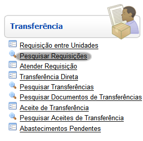
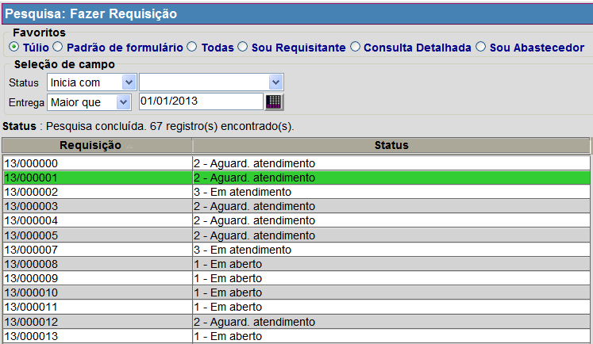
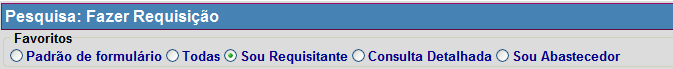
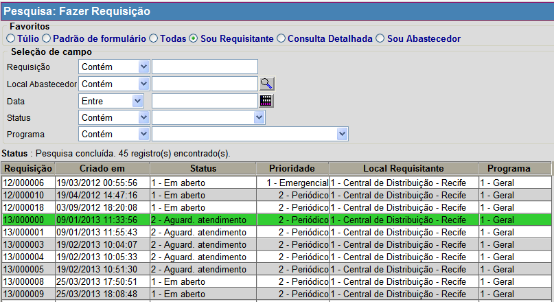

Pesquisar Requisições [ Voltar ]Este formulário permite a pesquisa de requisições realizadas entre duas unidades de rede de saúde. O formulário "Pesquisar Requisições" encontra-se dentro do menu "Transferencia". 
Ao entrar no formulário, o sistema exibirá a seguinte tela: 
Siga os passos abaixo para pesquisar uma Requisição: 1° Passo: utilize os favoritos para realizar a pesquisa de acordo com o perfil desejado.  2° Passo: utilize os filtros da seleção de campos para facilitar a localização da Requisição desejada. A pesquisa de requisições exibe uma lista de todas as requisições cadastradas no sistema. Para mais informações sobre as funcionalidades da pesquisa, favor ver o manual Introdução ao Sistema. 
Após utilizar os filtros, os resultados da pesquisa são exibidos automaticamente na tabela de resultados abaixo. Selecione com um clique a requisição desejada. Em seguida, A requisição será aberta na tela "Fazer Requisição" com a descrição completa da requisição realizada. |
 e selecione atraves da lista o local abastecedor desejado.
e selecione atraves da lista o local abastecedor desejado.